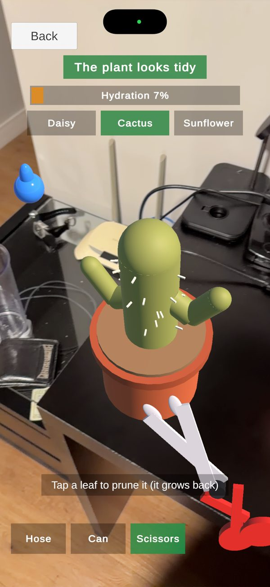
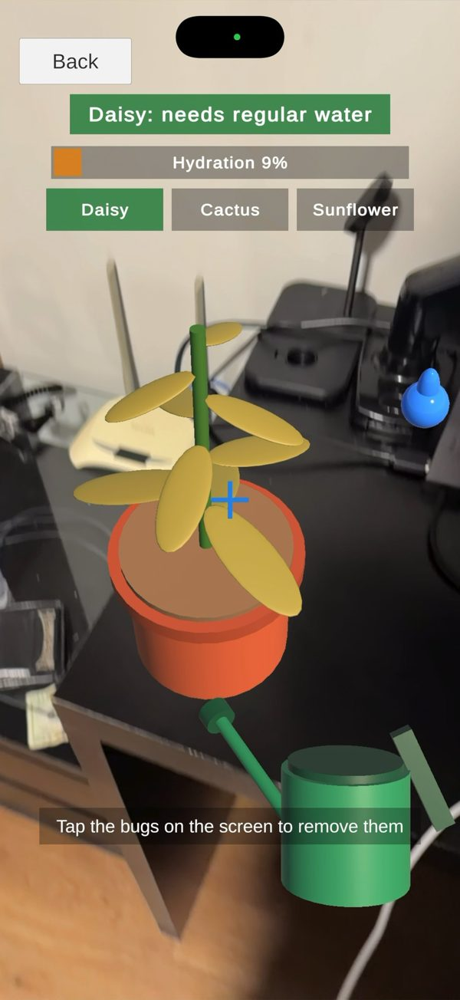
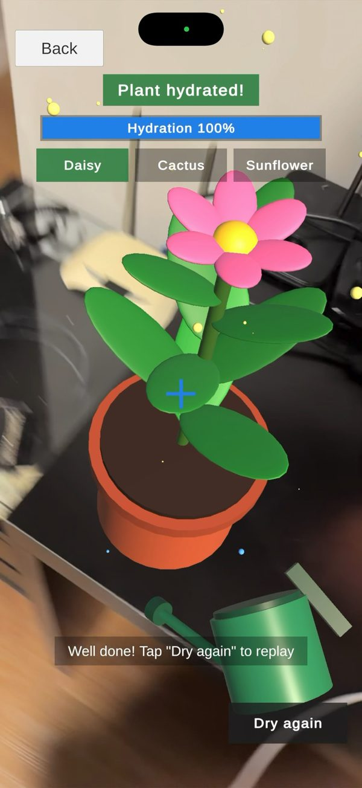
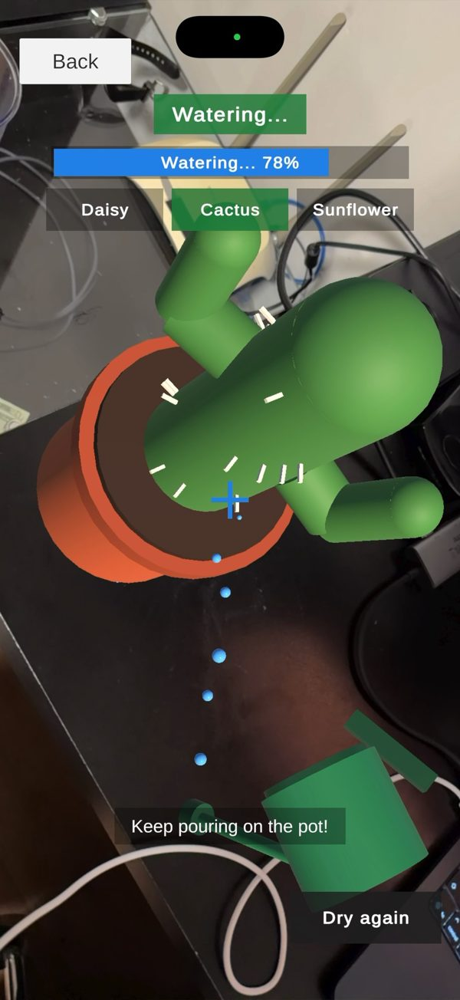
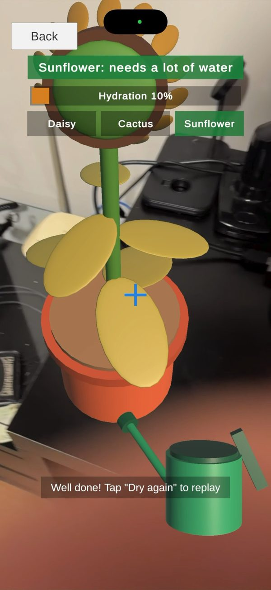
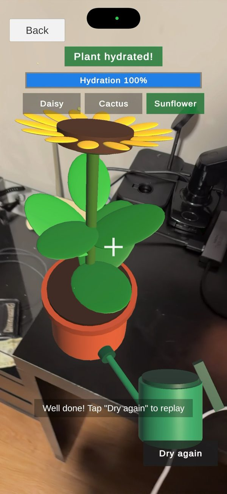
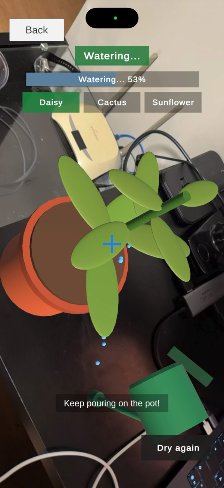
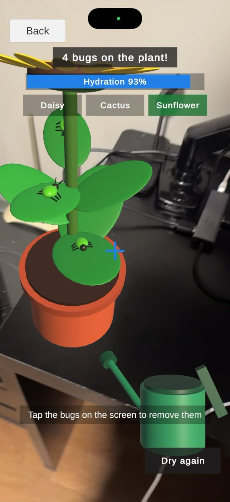

Cuide de uma planta virtual em Realidade Aumentada
João Fissmer e Pedro Scarelli
A planta aparece em tamanho real sobre a mesa e reage ao cuidado: bebe a água, fica verde, floresce, perde folhas secas e é atacada por insetos. Tudo preso ao mundo real, em Realidade Aumentada.
Simplificação sugerida pelo professor após a N3: a versão anterior diagnosticava folhas reais com uma rede neural.
AR Foundation (ARKit ou ARCore) mostra o mundo e rastreia o celular em 6DoF.
Detecção de planos encontra a mesa; um anel verde mostra onde a planta vai ficar.
Um toque coloca a planta no anel, presa à mesa. O botão Move troca o lugar.
A mira + no centro da tela é projetada na mesa: é ali que a água cai.
Hidratação, cores, flor, partículas, som e vibração mostram o resultado.
Tudo procedural: plantas, vaso, ferramentas e insetos são gerados em código, e os sons (água, sino, “pop”, tesoura) são sintetizados. O projeto não tem nenhum modelo 3D nem arquivo de áudio.
Ferramenta padrão. Coloque o + no vaso e segure o dedo na tela: sai um jato rápido e reto.
Incline o celular de lado, como um regador de verdade. Quanto mais inclina, mais forte o fluxo.
Toque numa folha: a tesoura voa até ela e corta. A folha cai girando e depois rebrota. As folhas secas pedem poda.
Depois de hidratada, a planta é atacada e seca mais rápido. Toque nos insetos para removê-los.

A água é um fluxo de partículas com gravidade, calculado para cair exatamente na mira. O app só conta a rega quando a água acerta a terra do vaso e o celular está a menos de 70 cm da planta.


Água normal. Com sede, as folhas caem e amarelam; hidratada, fica verde e abre uma flor rosa.

Precisa de pouca água (enche 2× mais rápido). Seco, murcha e baixa os braços; hidratado, engorda e floresce.


Precisa de muita água. Com sede, a cabeça pende com as pétalas fechadas; hidratado, levanta e abre o amarelo.
| ID | O usuário… | Status |
|---|---|---|
| RF01 | abre o app, libera a câmera e vê o mundo real (com atalho para os Ajustes se negou) | ✅ Concluído |
| RF02 | aponta para uma mesa, vê o anel verde e toca para colocar a planta (Move muda o lugar) | ✅ Concluído |
| RF03 | vê uma planta virtual com sede ancorada sobre a mesa, em tamanho real | ✅ Concluído |
| RF04 | rega com a mangueira (padrão): mira o + no vaso e segura a tela | ✅ Concluído |
| RF05 | rega com o regador inclinando o celular de lado | ✅ Concluído |
| RF06 | vê a planta se hidratar e comemorar a 100% (flor, brilhos, som, vibração) e recomeça com “Dry again” | ✅ Concluído |
| RF07 | escolhe entre margarida, cacto e girassol | ✅ Concluído |
| RF08 | poda as folhas secas com a tesoura e remove os insetos com um toque | ✅ Concluído |
Prints do iPhone: a planta com sede, a água caindo na mira, a planta hidratada com flor e o ataque de insetos.
RF03 · RF04 · RF05 · RF06 · RF08


Crianças, estudantes e iniciantes que querem aprender a cuidar de plantas, em casa, na escola ou em hortas comunitárias.
Ensina, brincando, que cada planta precisa de uma quantidade de água diferente, que folhas secas devem ser podadas e que pragas precisam ser removidas cedo.
Unity 6000.6.9f1 (URP) e C#, com ARKit no iPhone e ARCore no Android.
ARPlaneManager + ARRaycastManager: o centro da tela é projetado na mesa e um toque posiciona a planta.
Malhas, materiais URP, Particle System e áudio sintetizado. Nenhum asset externo.
GitHub com Kanban no GitHub Projects (uma issue por requisito) e build por linha de comando.
Perguntas?
github.com/pedroscarelli/plant-care-ar